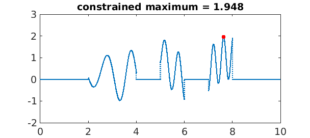
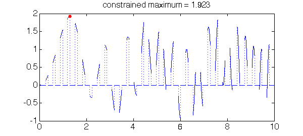
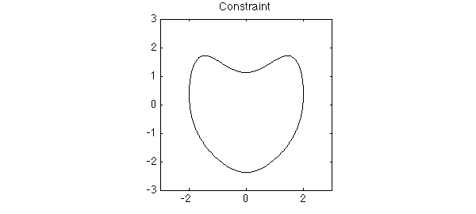
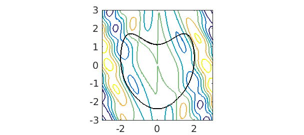
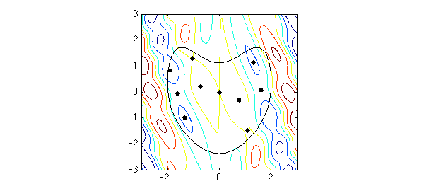
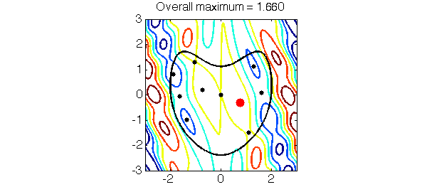

function ConstrainedOptimization
LW = 'linewidth'; lw = 1.6; FS = 'fontsize'; fs = 14; MS = 'markersize'; ms = 20;
One-dimensional constrained optimization
By virtue of Chebfun's capabilities with global rootfinding and global optimization, some constrained optimization is possible. For example, for $x\in[0,10]$, we can solve $$ \max( \sin(x)^2 + \sin(x^2) ), \quad \quad \lfloor x \rfloor = \mbox{prime}. $$
x = chebfun('x', [0 10]);
objective = chebfun( @(x) sin(x).^2 + sin(x.^2), [0 10] );
constrain = 0*x;
p = primes( 10 );
for j = 1:length(p)
constrain = constrain + ((p(j)<x) + (x<(p(j) + 1))-1);
end
g = objective.*constrain;
[mx, loc] = max( g );
plot(g,LW,lw), hold on, plot(loc, mx, 'r.', MS, ms), hold off
title(sprintf('constrained maximum = %1.3f',mx),FS,fs), set(gca,FS,fs)
ylim([-2 3]);

Here, to deal with the simple constraint on the independent variable a characteristic function was constructed and multiplied with the objective function.
Another constraint
A similar thing can be done with other constraints. For example, for $x\in[0,10]$, consider
$$ \min(\sin(x)^2+\sin(x^2)), \quad \quad |\sin(10x)|<1/2. $$
We can proceed like this:
x = chebfun('x', [0 10]);
objective = chebfun( @(x) sin(x).^2 + sin(x.^2), [0 10] );
constrain = (abs(sin(10*x)) < 1/2);
g = objective.*constrain;
[mx, loc] = max( g );
plot(g,LW,lw), hold on, plot(loc,mx,'r.',MS,ms), hold off
title(sprintf('constrained maximum = %1.3f', mx),FS,fs), set(gca,FS,fs)
ylim([-2 3]);

Two-dimensional constrained optimization
Chebfun2 also has capabilities for global rootfinding and optimization and hence, also some constrained optimization. For example, consider maximizing
$$ \cos((x-1/10)y)^2 + x \sin(3x+y) $$
over this heart-shaped region:
t = chebfun('t',[0,2*pi]);
x = 2*sin(t); y = 2*cos(t)-(1/2)*cos(2*t)-(1/4)*cos(3*t)-(1/8)*cos(4*t);
constrain = x + 1i*y;
plot(constrain,'k-',LW,lw), axis equal, title('Constraint',FS,fs)
axis([-3 3 -3 3])

Here is a contour plot of the objective function:
objective = chebfun2(@(x,y) cos((x-.1).*y).^2 + x.*sin(3*x+y), [-3 3 -3 3]); contour(objective, LW, lw), axis equal, hold on plot( constrain, 'k-', LW, lw), set(gca, FS, fs) axis([-3 3 -3 3])

We can solve this by first finding all the local extrema of the objective function, restricting to those that lie inside the heart, and then picking the maximum:
r = roots( grad( objective ) ); idx = inpolygon(r(:,1), r(:,2), constrain ); r = r(idx,:); plot(r(:,1), r(:,2), '.k', MS, ms) max_inside = max(objective(r(:,1), r(:,2))); max_boundary = max(objective(constrain)); max_overall = max(max_inside, max_boundary)

The maximum occurs inside the heart. Let's plot it:
[ignored, loc] = max(objective(r(:,1), r(:,2)));
plot( r(loc,1), r(loc,2), 'r.', MS, 40)
title(sprintf('Overall maximum = %1.3f', max_overall), FS, fs)

Humble comment
The reason that Chebfun and Chebfun2 are able to perform some constrained optimization is by virtue of global optimization. For large scale problems this approach quickly becomes too computationally expensive, and there is a huge field of mathematics devoted to more efficient methods.
end
Inpolygon
The script below is an overload of the inpolygon command in MATLAB. Functionality may be added into a new release of Chebfun, in which case this script will be removed.
function [in,on] = inpolygon(x,y,p)
%INPOLYGON True for points inside or on a region with chebfun boundary.
% IN = INPOLYGON(X, Y, P) returns a matrix IN the size of X and Y. IN(j,k) = 1
% if the point (X(j,k), Y(j,k)) is either strictly inside or on the edge of
% the region with boundary given by the chebfun P; otherwise IN(j,k) = 0.
%
% [IN ON] = INPOLYGON(X, Y, P) returns a second matrix, ON, which is the size
% of X and Y. ON(j,k) = 1 if the point (X(j,k), Y(j,k)) is on the edge of the
% polygonal region; otherwise ON(i,j) = 0.
tol = 100*eps;
p = p(:); % concatenate to column chebfun.
if ( all(abs(p(p.domain,'left') - p(p.domain,'right')) > 100*eps) )
error('CHEBFUN:inpolygon:closed','Chebfun must form closed curve.');
end
pgon = 1; %Is it a polygon?
for k = 1:numel(p.funs{:})
if ( length(p.funs{k}) > 2 ), pgon = 0; break; end
end
% If it is a polygon use MATLAB inbuilt `inpolygon` command.
if ( pgon )
[in, on] = inpolygon( x, y, real(p.values{:}), imag(p.values{:}) );
return
end
% Not a polygon. Use Cauchy residue theorem (winding numbers).
in = zeros( numel(x), 1); on=in;
for k = 1:numel(x)
if (~isempty(roots(p - x(k) - 1i*y(k)))) % Does the curve & point intersect?
on(k) = 1;
end
end
left = 1:numel(x); left = left(~on); % If not on, is it in?
% count winding number
for k = left
realp = real(p);
rts = roots(realp-x(k)); % Does curve cross vertical line?
if (isempty(rts)), continue, end % No cross -> not in.
sgn = sign(imag(p(rts))-y(k)); % Are we above or below the point?
way = diff(realp);
way = sign(way(rts)); % Clockwise or counterclockwise?
if ( abs(sum(sgn.*way)) > 1-tol ), in(k) = 1; end % Count up signs.
end
on = on | on; % convert to boolean
in = in | on;
end
max_overall = 1.659510987079417